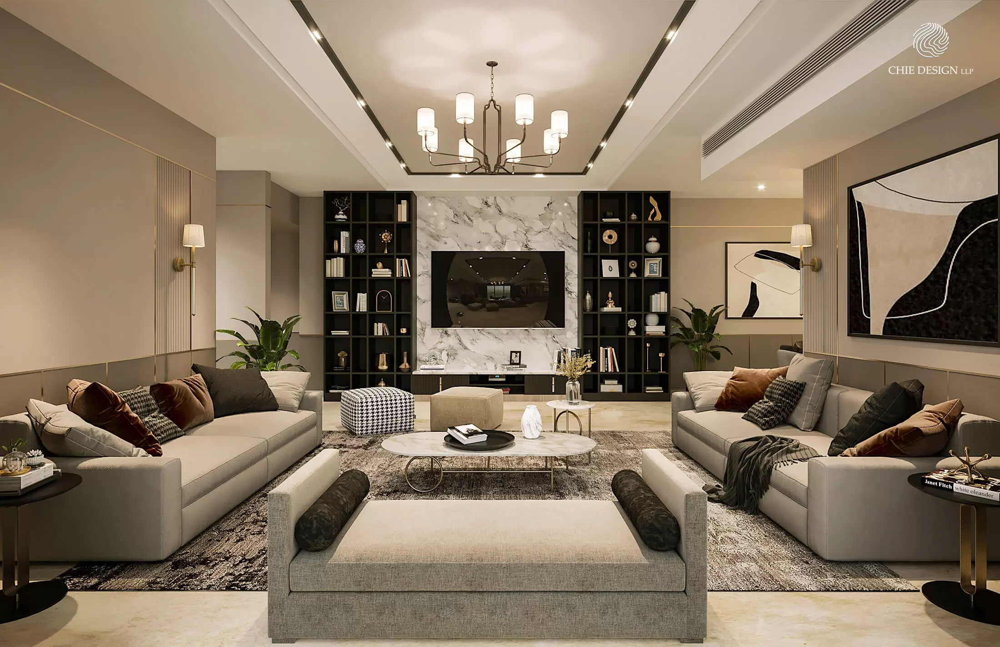

OUR VISION
We Go Beyond the Expected
Our vision is rooted in collaboration and clarity. By engaging closely with clients, partners, and stakeholders at every stage, we aim to understand objectives, operational needs, and long-term aspirations. This approach enables us to deliver tailored developments that go beyond conventional standards — projects that are purpose-driven, precisely executed, and designed to create lasting value for generations.
Our collaborative approach ensures a thorough understanding of your objectives, operational requirements, and long-term vision. By
engaging closely with you at every stage, we develop tailored solutions that transcend conventional expectations — delivering
projects that are precisely aligned with your goals, efficiently executed, and engineered to provide lasting value.